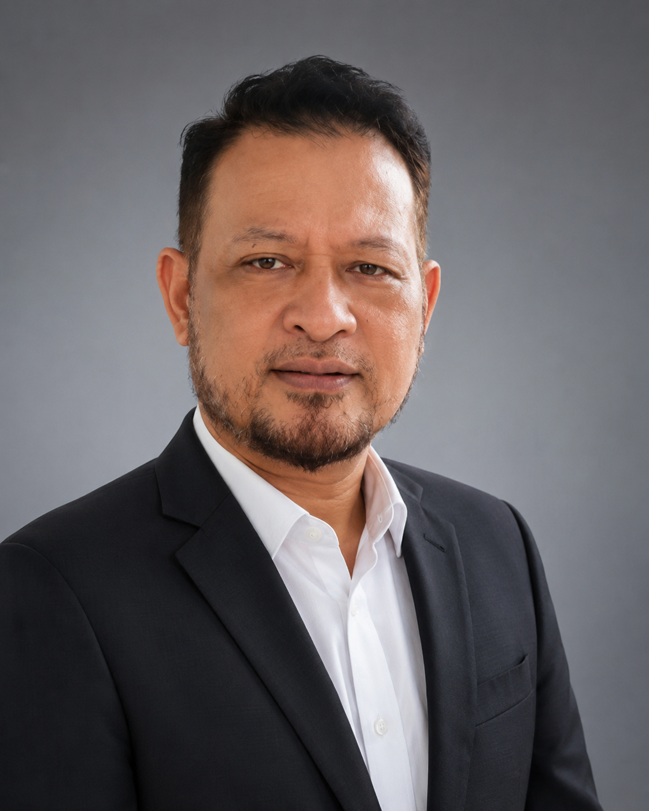
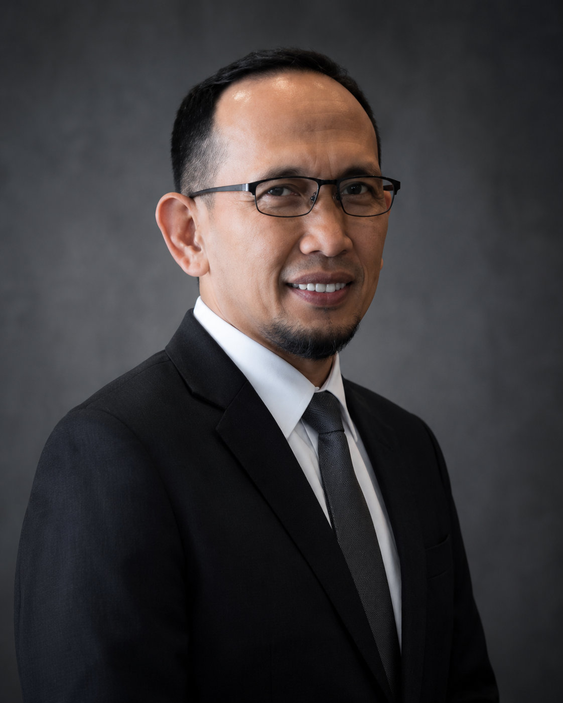
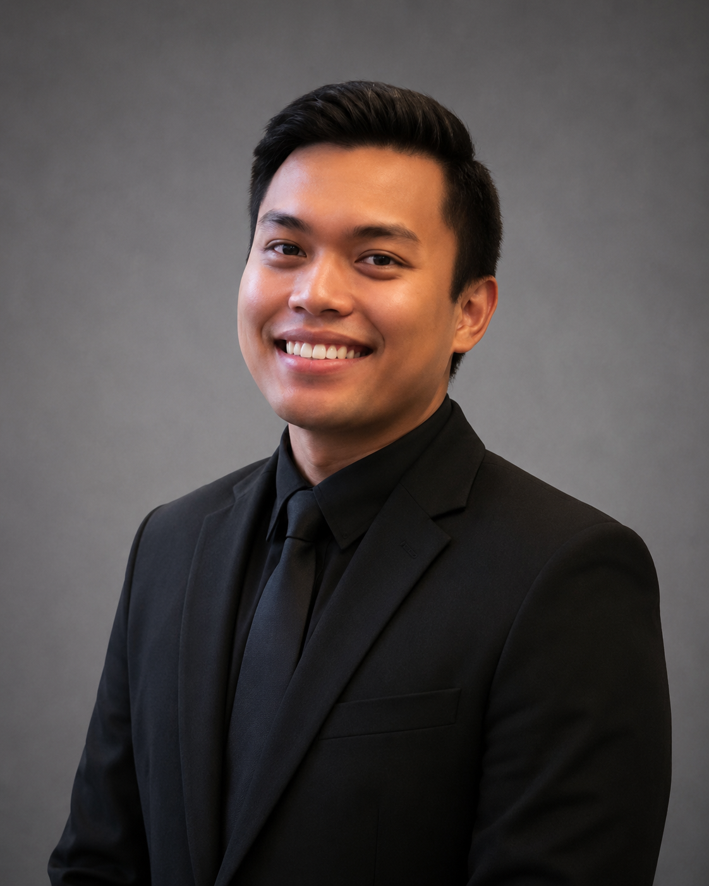

Karir
🇩🇪 Fakta Nyata Peluang ke Jerman (Bukan Janji Manis)
Mengenal lebih dalam tentang peluang nyata bekerja di Jerman, dari sektor kesehatan hingga teknologi. Apa saja yang perlu disiapkan?
Baca Selengkapnya
 Lembaga Resmi & Bersertifikasi
Lembaga Resmi & Bersertifikasi
Sieger Lingua International - Lembaga pelatihan bahasa Jerman profesional yang membimbingmu dari nol hingga mahir, lengkap dengan persiapan karir dan pendampingan keberangkatan ke Jerman.
Mengikuti standar CEFR yang diakui internasional
Alumni universitas Jerman dengan sertifikasi Goethe & DaF
Program perdana dengan bimbingan ekstra dan perhatian penuh
Lembaga pelatihan bahasa Jerman profesional yang mempersiapkan generasi muda Indonesia untuk bekerja, studi, dan berkarir di Jerman dengan pembelajaran terstandar CEFR dan pendampingan komprehensif.
Program pembelajaran bahasa Jerman intensif dari level A1 hingga B1 dengan kurikulum terstandar CEFR, mentor bersertifikat internasional, dan pendampingan lengkap hingga keberangkatan ke Jerman.
Lembaga pembelajaran bahasa Jerman berpengalaman dengan kurikulum terstandar internasional dan sistem pembelajaran yang terstruktur.
Pengajar profesional bersertifikasi Goethe-Institut dan DaF dengan pengalaman 5+ tahun, alumni universitas terkemuka di Jerman.
Kurikulum terstruktur CEFR dengan fokus 4 skill: Hören, Sprechen, Lesen, Schreiben melalui metode interaktif dan role-play.
Program intensif 6 bulan dengan 240+ jam pembelajaran, dari level dasar hingga intermediate, sesuai standar CEFR internasional.
SelengkapnyaLembaga pembelajaran bahasa Jerman dengan sistem terstruktur dan pengalaman dalam mempersiapkan siswa untuk studi dan kerja di Jerman.
SelengkapnyaPendampingan lengkap dari persiapan dokumen, visa, interview, hingga cultural orientation untuk keberangkatan ke Jerman.
SelengkapnyaTim pengajar bersertifikasi Goethe-Institut dan DaF, alumni universitas Jerman dengan pengalaman 5+ tahun mengajar.
SelengkapnyaKelas kecil maksimal 15 siswa dengan metode komunikatif, role-play, multimedia interaktif, dan e-learning 24/7.
SelengkapnyaDukungan penempatan kerja dengan network partner di Jerman, review CV, mock interview, dan follow-up support.
SelengkapnyaSistem pembelajaran terstruktur yang memastikan Anda mencapai target bahasa Jerman level B1 dalam 6 bulan
Minggu 1
Daftar program, isi formulir, dan ikuti placement test untuk mengetahui level awal Anda. Kami juga melakukan konseling untuk memahami tujuan dan target Anda.
Bulan 1-2 (8 minggu)
Pembelajaran dasar bahasa Jerman: alfabet, angka, perkenalan, everyday conversation. Fokus pada listening, speaking, reading, dan writing skills dasar.
Bulan 3-4 (8 minggu)
Pendalaman komunikasi sehari-hari, menulis email sederhana, berbicara tentang pengalaman dan rencana. Vocabulary dan grammar lebih kompleks.
Bulan 5-6 (8 minggu)
Level intermediate dengan kemampuan memahami teks kompleks, berdiskusi, menulis opini, dan berkomunikasi lancar dalam situasi kerja atau studi.
Setelah 6 bulan
Persiapan intensif ujian sertifikasi resmi (Goethe-Zertifikat B1 atau telc Deutsch B1). Simulasi ujian lengkap dan pembahasan strategi.
Daftar sekarang dan bergabung dengan Batch 1 yang sedang berjalan
Daftar Program SekarangPelajari jalur terbaik menuju studi atau karier di Jerman
Program lengkap dari A1 hingga B1 dengan pendampingan menyeluruh untuk pemuda yang ingin melanjutkan studi atau membangun karier di Jerman.
Kelas dasar bahasa Jerman untuk pemula yang ingin memulai perjalanan belajar bahasa Jerman dari nol.
Program intensif khusus untuk persiapan ujian sertifikasi Goethe-Zertifikat B1 atau telc Deutsch B1.
Sieger Lingua International menyediakan program pembelajaran bahasa Jerman intensif dari level dasar (A1) hingga intermediate (B1) dalam 6 bulan dengan kurikulum terstruktur sesuai standar CEFR.
Pembelajaran dilakukan secara intensif dengan pendampingan penuh dari mentor bersertifikat internasional, memastikan setiap siswa dapat berkembang sesuai target dan kemampuan masing-masing.
Jam Pembelajaran
Bulan Program Intensif
Level CEFR
Belajar langsung dari para ahli bahasa Jerman yang berpengalaman tinggal, studi, dan bekerja di Jerman dengan rekam jejak akademik internasional yang terbukti

Hi.-Dipl.-Ing. Berkah Mofaja Sprukur Carapebeka
Mentor Pengajar Bahasa Jerman
📅 Tj. Karang, 12 September 1970
Mentor dengan latar belakang akademik teknik dan pengalaman internasional yang mendalam. Memiliki komitmen menghadirkan proses belajar yang disiplin, terstruktur, dan berorientasi pada hasil. Motivasi saya adalah menghubungkan daya manusia Indonesia yang unggul berbahasa Jerman sehingga mampu bersaing di dunia kerja Jerman dan Eropa.
"Saya fokus membantu para pelajar yang ingin belajar atau melanjutkan studi di Jerman, mulai dari persiapan bahasa, pemahaman budaya akademik, hingga kesiapan menghadapi kehidupan perkuliahan di sana. Dengan metode pembelajaran yang efektif dan aplikatif, saya memastikan setiap siswa siap menghadapi tantangan global."

Mentor Bahasa Jerman
📅 13 Agustus 1964
Pengajar bahasa Jerman berpengalaman dengan latar belakang arsitektur dari Jerman. Mengajar dengan pendekatan praktis dan aplikatif, fokus pada persiapan Ausbildung dan kehidupan sehari-hari di Jerman. Berpengalaman memberikan bimbingan dari level dasar hingga persiapan keberangkatan, dengan pemahaman mendalam tentang sistem pendidikan dan budaya Jerman.
Pengalaman Profesional: Setelah lulus dari program Architecture Bremen, Jerman pada tahun 1994, saya bekerja di PT Salomo yang bergerak di bidang teknologi. Saya memiliki pengalaman kerja profesional di berbagai perusahaan di Indonesia dan Jerman, termasuk di divisi Arsitektur dan PT Samudra Indonesia di Jakarta. Pengalaman hidup dan bekerja di Jerman memberikan saya perspektif unik dalam mengajarkan bahasa Jerman, tidak hanya dari sisi gramatikal tetapi juga pemahaman budaya dan praktis untuk kehidupan sehari-hari di Jerman. Saya berkomitmen membantu generasi muda Indonesia menguasai bahasa Jerman untuk meraih peluang kerja dan studi di Jerman.

Muhammad Amar, B.Eng.
Mentor Bahasa Jerman
Lulusan teknik maritim dari Jerman dengan spesialisasi dalam bahasa teknis dan profesional. Berpengalaman dalam program Studienkolleg dan pendidikan tinggi di Jerman, memberikan perspektif unik tentang sistem pendidikan dan budaya akademik Jerman.
Keahlian Khusus: Mengajar bahasa Jerman teknis untuk bidang engineering, membantu persiapan Studienkolleg, dan memberikan bimbingan untuk mahasiswa yang ingin melanjutkan studi S1/S2 di universitas Jerman. Berpengalaman mendampingi siswa dalam persiapan TestDaF dan DSH.
Temukan jawaban untuk pertanyaan umum tentang program kami
Program intensif kami dirancang selama 6 bulan untuk membawa Anda dari level A1 hingga B1. Dengan pembelajaran terstruktur dan bimbingan intensif, mayoritas siswa kami berhasil lulus ujian B1 dalam waktu tersebut.
Syarat utama adalah berusia 18-35 tahun, memiliki motivasi kuat untuk bekerja/studi di Jerman, dan berkomitmen mengikuti program hingga selesai. Tidak perlu pengalaman bahasa Jerman sebelumnya.
Program beasiswa kami mencakup semua biaya pembelajaran dari A1-B1. Untuk biaya ujian sertifikasi resmi (Goethe/telc), akan diinformasikan secara terpisah dan kami bantu dalam proses pendaftarannya.
Kami memberikan bimbingan lengkap mulai dari persiapan dokumen visa, CV dan surat lamaran, persiapan wawancara, hingga pengurusan tiket dan akomodasi awal. Tim kami berpengalaman dalam proses ini.
Kami memiliki jaringan dengan berbagai perusahaan di Jerman dan akan membantu proses job placement. Namun, penempatan kerja bergantung pada kualifikasi individu, hasil ujian, dan kebutuhan perusahaan partner kami.
Kami menyediakan kelas offline di Bandar Lampung untuk hasil maksimal. Namun, untuk peserta dari luar kota, tersedia opsi kelas online dengan metode pembelajaran yang tetap interaktif dan efektif.
Baca artikel terbaru seputar bahasa Jerman dan peluang karir di Jerman
Mengenal lebih dalam tentang peluang nyata bekerja di Jerman, dari sektor kesehatan hingga teknologi. Apa saja yang perlu disiapkan?
Baca Selengkapnya
Strategi pembelajaran terbukti efektif untuk menguasai bahasa Jerman dengan cepat dan sistematis, dari A1 sampai B1.
Baca Selengkapnya
Memahami berbagai jenis visa Jerman, persyaratan dokumen, dan langkah-langkah pengajuan visa untuk studi atau kerja.
Baca Selengkapnya
Pemerintah Jerman meluncurkan Skilled Immigration Act yang membuka lebih banyak kesempatan bagi tenaga kerja asing berkualitas.
Baca Selengkapnya
Panduan lengkap tentang sistem pendidikan tinggi di Jerman, biaya hidup, cara mendapat beasiswa, dan kesempatan kerja sambilan.
Baca Selengkapnya
Persiapan wawancara kerja yang efektif, budaya kerja Jerman, dan strategi menjawab pertanyaan interview dalam bahasa Jerman.
Baca SelengkapnyaLihat lebih banyak artikel dan panduan
Lihat Semua ArtikelBergabunglah dengan ratusan siswa yang telah mewujudkan impian mereka bersama Sieger Lingua International
Punya pertanyaan? Kami siap membantu Anda
Jl. Pisang Tanduk No. 51, Susunan Baru
Kec. Tj. Karang Barat
Kota Bandar Lampung, 35151
Senin - Jumat: 08.00 - 17.00 WIB
Sabtu: 08.00 - 14.00 WIB